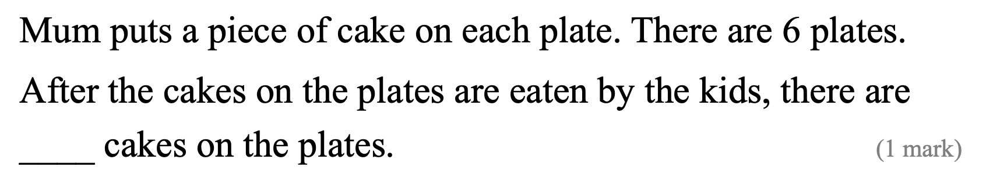
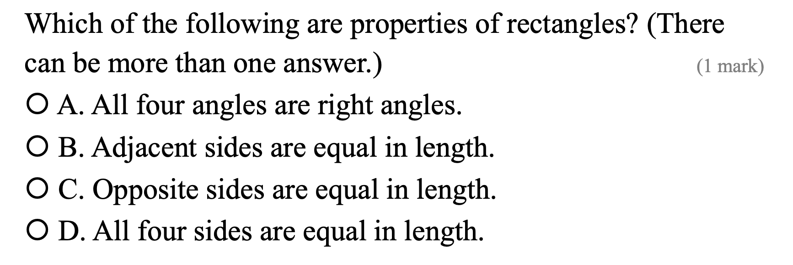

He ________ (do) housework now.
Answer:
已掌握
| # | 中文意思 | 例句/提示 | 英文默写 | 已掌握 |
|---|---|---|---|---|
| noun 名词 | ||||
| 1 | 花园 | We play in the . | ||
| 2 | 教堂 | The old is quiet. | ||
| 3 | 周五 | I can use in class. | ||
| 4 | 小学生 | The reads a book. | ||
| 5 | 角色 | I have a in the play. | ||
| 6 | 晚饭 | We eat at home. | ||
| 7 | 医院 | I can use in class. | ||
| 8 | 早餐 | I can use in class. | ||
| verb 动词 | ||||
| 9 | 待在 | I at home on rainy days. | ||
| 10 | 收拾、收纳 | I can use in class. | ||
| 11 | 称重 | We the bag. | ||
| phrase 短语 | ||||
| 12 | 脱下 | Please your shoes. | ||
| 13 | 数学计算 | We in math class. | ||
| 14 | 整理书架 | I can use in class. | ||
| adjective/interjection 形容词/感叹词 | ||||
| 15 | 欢迎 | to our school. | ||
| verb/noun 动词/名词 | ||||
| 16 | 旅行 | We during the holiday. | ||
| uncategorized 未分类 | ||||
| 17 | 英语 | I can use in class. | ||
| 18 | 遮盖 | I can use in class. | ||
| 19 | 保持 | I can use in class. | ||
| 20 | 相信 | I can use in class. | ||
| # | 单词/词组 | 中文意思 | 例句/说明 | 已掌握 |
|---|---|---|---|---|
| noun 名词 | ||||
| 1 | buffet | We had lunch at a buffet. | ||
| 2 | character | The story has many characters. | ||
| 3 | housewife | The housewife is cooking. | ||
| 4 | shelf | I can use shelf in class. | ||
| 5 | pond | There is a small pond in the park. | ||
| 6 | guitar | She plays the guitar. | ||
| 7 | kind | A dog is a kind of animal. | ||
| 8 | roundabout | The roundabout is in the playground. | ||
| 9 | costume | I wear a costume at the festival. | ||
| 10 | picnic | We have a picnic in the park. | ||
| 11 | chapter | This chapter is about animals. | ||
| noun phrase 名词短语 | ||||
| 12 | department store | We shop at the department store. | ||
| verb 动词 | ||||
| 13 | celebrate | We celebrate my birthday. | ||
| 14 | weigh | We weigh the bag. | ||
| phrase 短语 | ||||
| 15 | Causeway Bay | I can use Causeway Bay in class. | ||
| 16 | step on | I can use step on in class. | ||
| 17 | reading comprehension | I can use reading comprehension in class. | ||
| 18 | Lamma Island | I can use Lamma Island in class. | ||
| 19 | red packet | I can use red packet in class. | ||
| noun/verb 名词/动词 | ||||
| 20 | survey | We do a survey in class. | ||
| uncategorized 未分类 | ||||
| 21 | assessment | I can use assessment in class. | ||
| 22 | mid-year | I can use mid-year in class. | ||
| 23 | remember | I can use remember in class. | ||
| 24 | structure | I can use structure in class. | ||
| 25 | farming | I can use farming in class. | ||
| 26 | bingo | I can use bingo in class. | ||
| 27 | illustrate | I can use illustrate in class. | ||
| 28 | lantern | I can use lantern in class. | ||
| 29 | detail | I can use detail in class. | ||
| adverb 副词 | ||||
| 30 | accidently | I can use accidently in class. | ||
| # | 中文意思 | 例句/提示 | 英文默写 | 已掌握 |
|---|---|---|---|---|
| time/date 时间日期 | ||||
| 1 | 十月 | is the tenth month. | ||
| 2 | 十一月 | is the eleventh month. | ||
| 3 | 十二月 | is the twelfth month. | ||
| time unit 时间单位 | ||||
| 4 | 年 | A has 12 months. | ||
| directions 方向 | ||||
| 5 | 西 | The sun sets in the . | ||
| numbers 数字 | ||||
| 6 | 13 | is 13. | ||
| 7 | 17 | is 17. | ||
| 8 | 20 | is 20. | ||
| 9 | 30 | is 30. | ||
| 10 | 70 | is 70. | ||
| 11 | 百 | One is 100. | ||
| 12 | 千 | One is 1000. | ||
| ordinal numbers 序数 | ||||
| 13 | 第二 | This is the shape. | ||
| 14 | 第三 | This is the shape. | ||
| solid shape 立体图形 | ||||
| 15 | 球 | A is round. | ||
| # | 单词/词组 | 中文意思 | 例句/说明 | 已掌握 |
|---|---|---|---|---|
| operations 运算 | ||||
| 1 | total | Find the total number of apples. | ||
| 2 | altogether | How many are there altogether? | ||
| 3 | carrying | Carrying helps when the ones make ten. | ||
| geometry 几何 | ||||
| 4 | perpendicular | Perpendicular lines meet at a right angle. | ||
| 5 | acute angle | An acute angle is smaller than a right angle. | ||
| 6 | grid | A grid helps us find positions. | ||
| 7 | line segment | Draw a line segment. | ||
| 8 | adjecent side | I can read adjecent side in a math question. | ||
| question word 题目词 | ||||
| 9 | calculate | Calculate the answer. | ||
| 10 | estimate | Estimate the answer first. | ||
| 11 | onwards | Count onwards from 20. | ||
| 12 | match | Match the number to the word. | ||
| 13 | respectively | Tom and Ben have 2 and 3 books respectively. | ||
| shape 形状 | ||||
| 14 | circle | Draw a circle around the answer. | ||
| answer 答案 | ||||
| 15 | correct | Choose the correct answer. | ||
| comparison 比较 | ||||
| 16 | fewer | There are fewer apples in this box. | ||
| 17 | shortest | Find the shortest line. | ||
| time/date 时间日期 | ||||
| 18 | minute hand | I can read minute hand in a math question. | ||
| 19 | common year | I can read common year in a math question. | ||
| position 位置 | ||||
| 20 | below | The box is below the table. | ||
| 21 | front | The door is at the front of the room. | ||
| 22 | above | The clock is above the board. | ||
| operations calculation 运算 | ||||
| 23 | equally | Share the apples equally. | ||
| 24 | quotient | The quotient is the answer in division. | ||
| 25 | remainder | The remainder is left after division. | ||
| measurement 测量 | ||||
| 26 | centimetre | A centimetre is a small unit of length. | ||
| 27 | measure | We measure the length with a ruler. | ||
| geometry tool 几何工具 | ||||
| 28 | set square | A set square helps us draw angles. | ||
| directions tool 方向工具 | ||||
| 29 | compass | A compass shows directions. | ||
| 句型结构 | ||||
| 30 | ... is to the west of ... | The bank is to the west of the school. | ||

